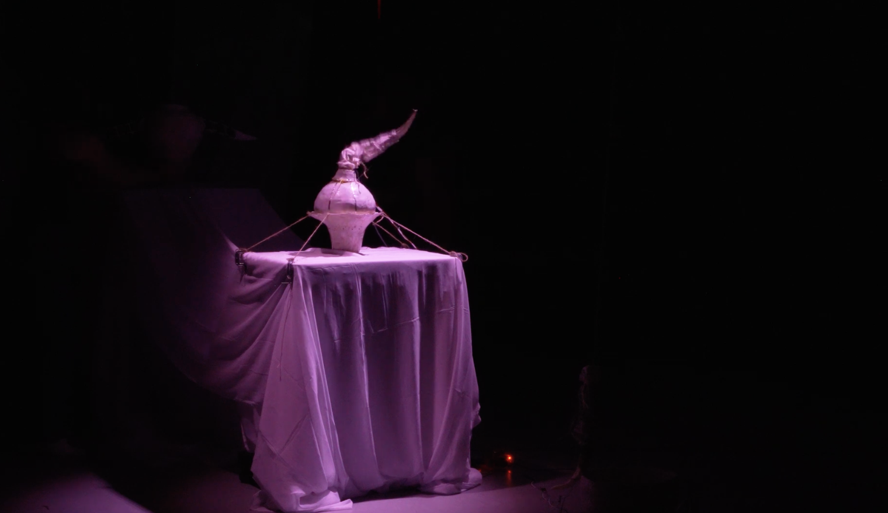
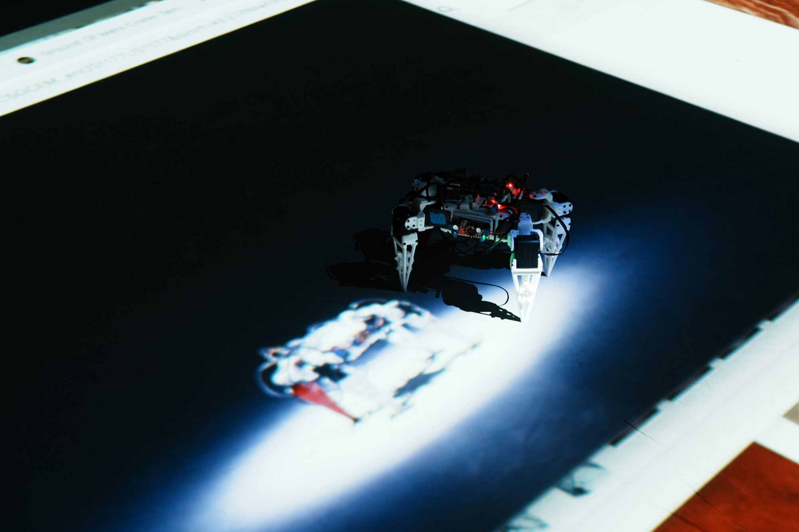
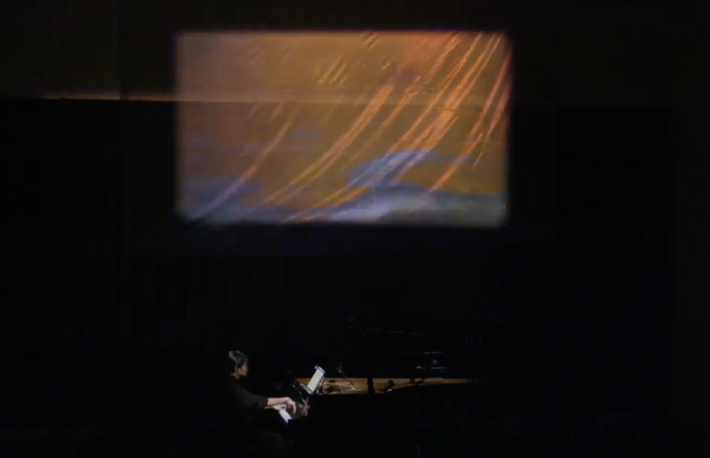
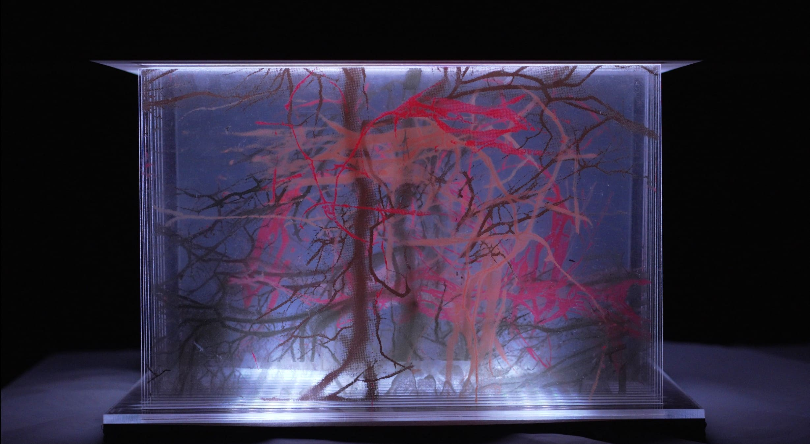
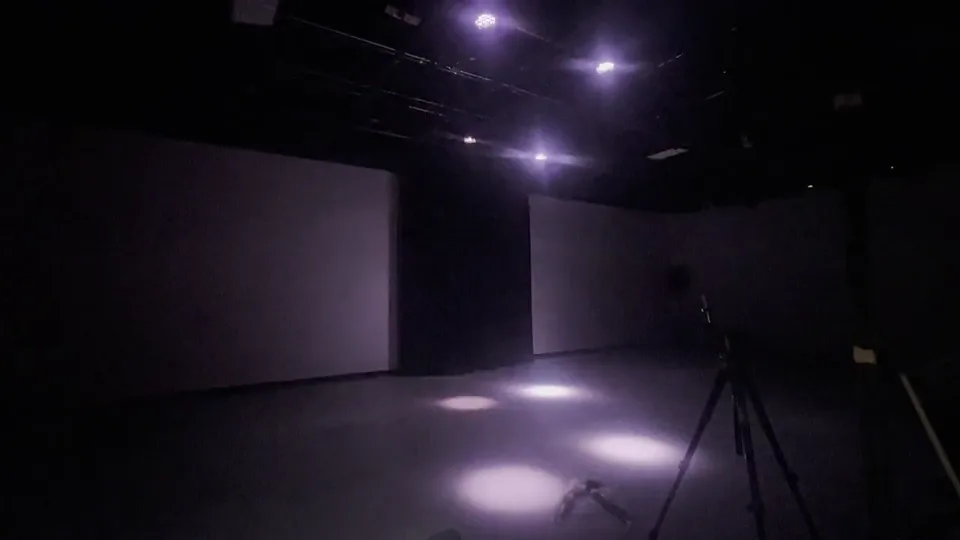

01 / Make
Through materials and machines, I explore new forms of interaction
I explore how materials and technologies shape bodily experience, emotion, and relationships.

Tactone
A touch-responsive ceramic instrument exploring how three-dimensional form and spatially arranged contacts shape musical interaction.

Tether
Tether explores how a loved one’s remote input can become a bodily encounter through a neck-worn robotic mechanism.

Movement Lab Student Artist in Residence
Interactive installations translating human gesture into synchronized robotic movement and stage lighting.

Quadruped
A custom-fabricated and programmed quadruped robot built from its mechanics through its motion system.

Composing Audiovisual Space
A live audiovisual performance exploring the tension between meditative calm and inner struggle through layered projections.

Synaptic
Exploring light, depth, and transparency as a material language for representing neural connectivity.

How to Make the Air Obey – Light Program
An interactive program that turns audience gestures and speech into live stage lighting at Barnard’s Movement Lab.

Even When You Stand Still
Lighting design for Lynn Wilcox’s Student Artist-in-Residence (SAiR) performance at Barnard Movement Lab.

Lighting Design Experiments
Experiments with the Barnard Movement Lab’s ETC Eos lighting console during my Student Artist-in-Residence program.